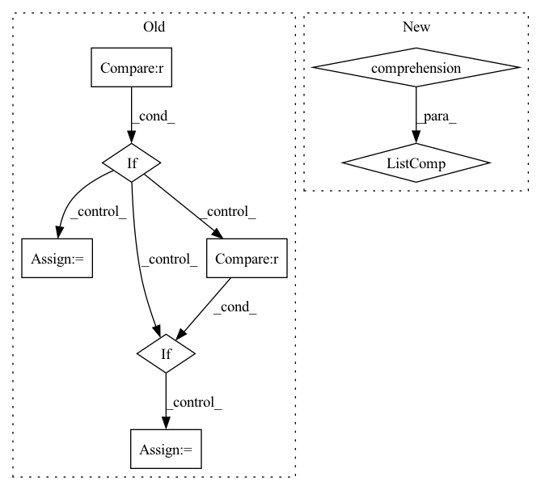

Pattern ID :1731
Before Change
h, e = conv(g, h, e)
g.ndata["h"] = h
if self.readout == "sum" :
hg = dgl.sum_nodes(g, "h")
elif self.readout == "max":
hg = dgl.max_nodes(g, "h")
elif self.readout == "mean" :
hg = dgl.mean_nodes(g, "h")
else:
hg = dgl.mean_nodes(g, "h") // default readout is mean nodes
sig = nn.Sigmoid()
After Change
def forward(self, g):
self.gnn(g)
readouts_to_cat = [dgl.readout_nodes(g, "f", op=aggr) for aggr in self.readout_aggregators]
readout = torch.cat(readouts_to_cat, dim=-1)
return self.output(readout)
In pattern: SUPERPATTERN
Frequency: 3
Non-data size: 8
Instances Fragment ID: 12911301
Project Name: hannesstark/3dinfomax
Commit Name: 934d8fb3ef28cbe5340fd6a305e55c7130a16966
Time: 2021-06-12
Author: hannes.staerk@gmail.com
File Name: models/san.py
M Class Name: SAN
N Class Name: SAN
M Method Name: forward(2)
N Method Name: forward(4)
M Parent Class: nn.Module
N Parent Class: nn.Module
M File Name: models/san.py
N File Name: models/san.py
M Start Line: 297
M End Line: 320
N Start Line: 270
N End Line: 274
Before Change
if self.readout == "sum":
hg = dgl.sum_nodes(g, "h")
elif self.readout == "max" :
hg = dgl.max_nodes(g, "h")
elif self.readout == "mean" :
hg = dgl.mean_nodes(g, "h")
else:
hg = dgl.mean_nodes(g, "h") // default readout is mean nodes
sig = nn.Sigmoid()
After Change
h, e = conv(g, h, e)
g.ndata["h"] = h
readouts_to_cat = [dgl.readout_nodes(g, "f", op=aggr) for aggr in self.readout_aggregators]
readout = torch.cat(readouts_to_cat, dim=-1)
return self.output(readout)
Fragment ID: 12911365
Project Name: hannesstark/3dinfomax
Commit Name: 1d85f551afa4c84c3832ac28e92b838537f54542
Time: 2021-06-11
Author: hannes.staerk@gmail.com
File Name: models/san.py
M Class Name: SAN_NodeLPE
N Class Name: SAN_NodeLPE
M Method Name: forward(2)
N Method Name: forward(6)
M Parent Class: nn.Module
N Parent Class: nn.Module
M File Name: models/san.py
N File Name: models/san.py
M Start Line: 369
M End Line: 412
N Start Line: 369
N End Line: 403
Before Change
// X: a list of features from different modalities
def forward(self, X):
if self.split_block == 1 :
ret = self.blocks[0](X)
return ret
// split into multiple time segments, assumes in 2nd dim
segmented_x = [list(torch.split(x, x.shape[2] // self.split_block, dim=2)) for x in X]
for x in segmented_x:
if len(x) > self.split_block :
x[-2] = torch.cat(x[-2:], dim=2)
ret_segments = []
for i in range(self.split_block):After Change
segment_shapes = [[x.shape[2] // self.split_block] * self.split_block for x in X]
for x, seg_shape in zip(X, segment_shapes):
seg_shape[-1] += x.shape[2] % self.split_block
segmented_x = [torch.split(x, seg_shape, dim=2) for x, seg_shape in zip(X, segment_shapes)]
// apply MSAF
ret_segments = [self.blocks[i]([x[i] for x in segmented_x]) for i in range(self.split_block)]
Fragment ID: 12911366
Project Name: anita-hu/msaf
Commit Name: c784fa99febfbf86ef8aa8f6fa708227a7251ab1
Time: 2020-12-30
Author: anitahu113@gmail.com
File Name: MSAF.py
M Class Name: MSAF
N Class Name: MSAF
M Method Name: forward(2)
N Method Name: forward(2)
M Parent Class: nn.Module
N Parent Class: nn.Module
M File Name: MSAF.py
N File Name: MSAF.py
M Start Line: 131
M End Line: 145
N Start Line: 133
N End Line: 139